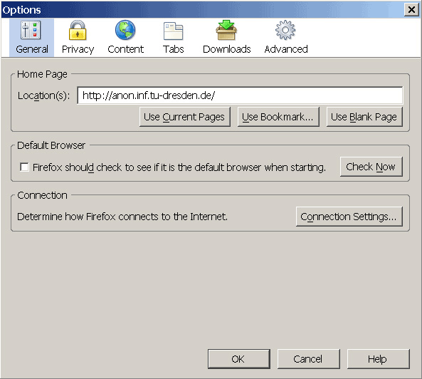
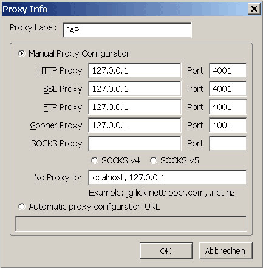

Proxy settings for browsers: Mozilla Firefox 1.x
To set up JonDo for Mozilla-Firefox, do the following steps:
1.) From the menu "Tools", choose the submenu "Settings...". The settings window will open. Choose the "General" category.

2.) To change the proxy server, click on the "Connection Settings..." button. In the new window that opens, choose "Manual Proxy Configuration". Activate "Use the same proxy for all protocols" and enter "127.0.0.1" as the server and "4001" as the port (without the quotation marks).

If you want specify addresses where JonDo shall not be used, you can enter those exceptions into the field No Proxy for:, separated by commas.
Please note that exceptions can be managed in a more flexible way using Proxomitron.
Note: If you set a different listener port in JonDo, you'll have to enter this port here too, rather than 4001.
Recommended plugins for Mozilla firefox
SwitchProxy is a recommended plugin for firefox.
This extension adds a toolbar to firefox allowing fast switching between proxy settings. This is useful for switching between surfing with JonDo and non-anonymous surfing without JonDo.
- Installation
These are two ways to go to the plugin's installation website:
- Open this link to go to the installation website directly.
OR
- Choose Tools from the menu, then Extensions. A window showing all installed extensions will appear. Click Get more extensions to reach the plugin site for firefox. Perform a search for "SwitchProxy Tool".
Click on "Install Now". Approve the installation and restart your browser.
- Settings
Now you should see a new toolbar:

Choose Add from the toolbar to add a new proxy. Choose proxy configuration type Standard and click Next.
Next to Proxy Label, enter for example "JonDo" ein, but the labelling is not important. Enter address "127.0.0.1" and port 4001 for each type of proxy except for SOCKS (HTTP, SSL, FTP, Gopher):

Confirm by pressing OK.
- Optional settings
You may hide SwitchProxy's toolbar so that it will consume no space. It may still be used by context menu (right click) and menu Tools -> SwitchProxy.
To hide the toolbar, click Preferences in it or go to Tools -> Extensions to open a window with all extensions listed, choose plugin SwitchProxy and click Options.
Uncheck Show toolbar but leave Show Context Menu and Show in Status Bar checked.